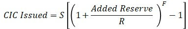
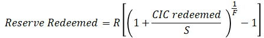
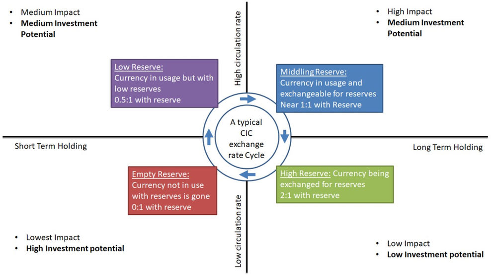
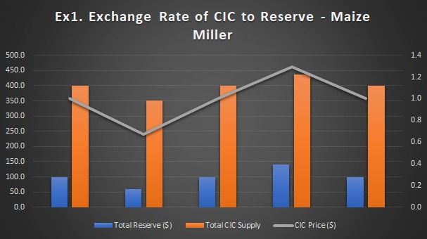
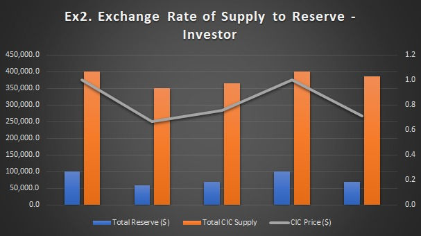

Investment Modelling in Community Inclusion Currencies
While Community Inclusion Currencies (CICs) have been shown to increase local trade they can also be a vehicle for collective share holding and impact investment. A large portfolio of CICs could represent millions of dollars of investment while the circulation of the CIC could enable billions of dollars of trade in marginalized communities. All the equations and graphs in the examples below can be here can be found on GitHub here..
We can approximate that the overall impact of a CIC on the economy is proportional to its circulation rate times its total market capitalization i.e. Impact ~= Velocity*(CIC_Supply * Exchange_rate) based on the arguments below and typical usage we should see a cycle of states where CICs starts with an exchange rate of 1:1 with its reserve (currently a National Currency based Stable Coin DAI) followed by the exchange rate moving in either direction. If seen as an investment opportunity and more reserve is added and more tokens are created (as shares of those reserve added) then the exchange rate will increase.
A typical share price of a company is based capital assets, augmented by investors expectations. Instead with a CIC your share price (exchange rate) is based on known underlying reserves Exchange Rate P = L * Reserve / Supply (L is our leverage as a variable on the smart contract L = 1/F below) and the bonding curve equations as originally defined by Bancor's smart contract:
As more reserve is added, less and less supply (shares) are created and the share value (exchange price of the CIC token to its reserve) increases. (eq1: Minting)
S = the entire supply of CIC tokens, R = the entire Reserve in National Currency and F = 1 / Leverage
As supply of CIC is cashed out or burnt/(reserve redeemed) then less and less reserve is released then that share price drops. (eq2, Redemption)
Once the price moves up it is because people believe they will get something of value for it in the near to long term holding. Either they will buy a product at market or under market rates using the CIC or they will hold the CIC in order to use it later when the exchange price is higher (a longer term investment). As more people add to the reserve the price will eventually rise high enough that the long term holders will want to cash out (say once it reaches a plateau – forced or market based). This liquidation of long term holders will cause the price to drop and could cause a cascade effect reducing the reserve to near zero.
Once at near zero reserve the remaining CICs in circulation have a near zero exchange rate and so trading will slow down as people lack confidence to accept it for goods and services. But this is also an investment opportunity. At such a low reserve and hence exchange rate, putting more reserve in and minting new tokens is quite cheap. This investment would lead to a middling reserve period whose momentum may bring the currency all the way back to 1:1 with the national currency and even farther to a high reserve period.
These four reserve cases (zero, low, middling, and high) are shown above with their relative merits and detriments. Note that the cycle above is just one possible cycle that we see in the CICs in Kenya and is generally caused by donor aid.
Some challenges therein: 1. No investment: Should the currency not allow investors a return they will see no reason to invest in the first place - no matter the transaction velocity, there will be insufficient capital behind it to scale. What keeps the currency alive? - both the reserve and the social capital behind it. When the reserve runs out, can someone still use the currency for some good or service at market value? (This is expected market stabilization) If so, then there is a huge local short term investment opportunity (i.e. to buy products at cheaper rates - in this case is arbitrage) – which could translate into a medium and long term investment opportunity.
- Fast Liquidation: should investors cash out too soon and too much the currency may be too volatile and may never build enough market confidence to reach high transaction amounts with sufficient capital to have high impacts.
In example 1 below we show the effect of social backing on problem (1) and in example 2 we have the effect of investment on problem (2) above.
Example 1. Maize Miller
For example. If I run a maize mill (a cooperative owned by 25 women in Kenya) and I create a CIC at 4x leverage and put in 100 USD into reserve and mint 400 CIC tokens. Then my Price is 4*100/400 = 1. If I can spend those 400 tokens as if they were equal to $1 on labor and other local needs (rent, school fees, water) then I would have multiplied my purchasing power. If everyone returns those tokens to me for my maize – I will have simply given myself an advance on my own maize. I could then cash out my share to pull back out the 100 USD that was simply acting as collateral there. My profit is zero but I have increased my turnover.
Let’s say there is now a reserve remaining of $58.6 and 350 tokens remaining and let’s say all these remaining 350 tokens are returned to the maize mill for $350 USD of flour. So, I, the maize mill, now have 350 tokens backed by $58.6USD in reserve and a price of P = 4X $58.6/350 = $0.67USD. Well, I - the maize miller, have gotten $400 USD of labor costs and spent $350 USD in product and am remaining with $58.6 USD of reserve. Meaning that I got an overall $100 in wages reduction – redemption in product at the cost of $41.4USD of my reserve). My profit here is the $400USD in labor I received minus the loss of $350USD of stock + $58.6USD of reserve minus the $100 of reserve initially used = $8.6USD. While the seller of tokens took a loss of $50USD(labor) - $41.4USD(reserve received) = $-8.6USD.
In this case the community are being incentivized to use the tokens at the maize mill or other CIC accepting businesses, rather than cashing them out. But now that the maize miller has all the tokens again buyers of flour should be able to put in more reserve themselves and mint tokens at the market price of $0.67USD to make a profit themselves.
Let’s say the one buyer of maize who lost above by cashing out, decided to take all his $41.4USD that he cashed out and put it back into the reserve? This automatically creates for him 50 tokens [eq1] so the total supply of tokens now is 350+50 = 400 and there are now $58.6+$41.4 = $100USD in reserve. The 400 tokens are now worth: P = 4* $100/400 = $1.00USD in exchange value (back to parity).
In all three stages here $400, $350 and $50 = $800USD of flour was consumed and another $400USD + 400 USD of Labor was purchased that is $1600 USD of trade based on a reserve of $100USD being leveraged into 400 tokens which circulated 4x for a total impact of 16x when compared to just spending the reserve. Again if we assume Impact ~= Velocity*(Supply * Exchange rate) and we 4x the supply and 4x the circulation and average out the exchange rate to 1. This could continue on and on resulting in more and more trade facilitated.
So there is a key assumption here: That the CIC issuer will accept CIC’s for flour pegged 1:1 with the Research (National Currency). If the issuer – maize mill owner decides to gouge clients after spending at full rates then people will not accept the CICs for labor at full rates in the future. This represents the social backing of the voucher and gives someone a reason to put in money into the reserve when the price is low.
Now given a market with many CIC issuers, if an issuer decided to price gouge clients – those clients have other options – they can convert their CIC to another CIC issuers token.
If the CIC issuer wants to continue using CICs in order to buy labor and increase turnover and is assured, there will be some buyers in the future he is obligated to continue accepting CICs at the same rate he spent them in the first place (1:1 with National Currency).
If we imagine the primary market is the maize seller and buyers and the secondary market is the smart-contract (eq,1&2) then a third market could be impact investors and humanitarian aid providers. This is where long term CIC buyers and holders can come in. They can do two important things – contribute initial seed funds to reserves to offset risk for a CIC issuer and they can purchase CICs when the price is low and sell them when it is high. This second function is similar to an insurance fund which could be automated and holds both CICs and their reserve and continually readjusts the price within a band.
Example 2 – Impact Investor:
Let’s say I am an impact investor and I see the situation happening above over a 1 year period and I believe it could happen much faster. So at the end of the 1st period when the price has dropped I decide to put in $10.0 USD into the reserve and create 14 tokens (eq1) and then wait until someone else puts in another $31.4 USD to buy more maize locally. At that point the price has climbed back up to $1USD (parity with reserve) and I cash out all my 14 tokens to receive $13.33USD. I have gotten a 33% return on my investment of $10USD and dropped the token price back down to $0.7 USD. If I take my original $10 out of the system, I'll be left with ~3USD of tokens which I can just leave there as a donation or further investment – that will continue to enable trading and circulation.**
Practically we restrict (eq2) how fast someone can cash out their tokens by having them vest over time, to ward off the case where someone drops the token price dramatically in a short period. So as an investor I can take out my profit slowly and must therefore leave in my principal for a longer period - building market confidence.
Also note that if instead of $100 USD in reserve we have $100,000 USD in reserve and create 400,000 CIC tokens (these could be aggregated over many CICs) and our investment is $10,000 USD, I would pull out $13,333 USD in the end and could donate the $3,333 profit. The net effect is that I lent 10K when it was most needed.Rather than extracting wealth from marginalized people, an impact investor has invested capital in boosting the local economy of CIC holders.
With a CIC portfolio of millions of dollars’ worth of many CICs there is ample room for investment and at the same time - with ~5x the circulation than National Currency we could see billions of dollars of trade in marginalized communities. CICs incentivize wealth creation with minimal capital because they drive internal trade and penalize external trade. Users have abundant internal liquidity, but if a CIC holder really needs reserve (dollars), they can get them (at a small premium which they can afford). All the equations and graphs here can be found on GitHub here..